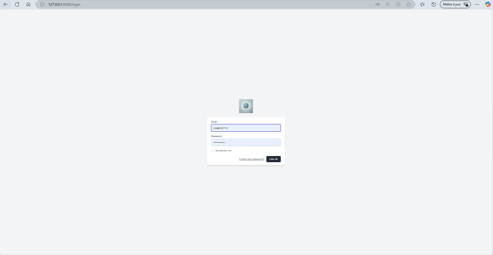

Projets de 1ère Année
Projet #1 (1ère année) — Comparaison de deux fichiers CSV avec Java (Eclipse)
-
Titre du projet :
Comparaison de deux fichiers CSV
-
Contexte :
Réalisé lors de la 1ère année du BTS SIO.
Etant débutant,quel que soit le langage informatique.
Malgré mes lacunes, j’ai pu réaliser plusieurs projets.
J’ai beaucoup appris et je suis conscient qu’il me reste encore énormément à apprendre.
-
Technologies utilisées :
- Eclipse : IDE utilisé pour coder en Java et lancer le programme.
Bien maîtriser son IDE est crucial pour débuter efficacement et demande comme tout un temps d'habilitation.
-
Objectif :
L’objectif était de nous familiariser avec les bases de la programmation en Java.
Le projet consistait à comparer deux fichiers CSV pour repérer à la fois
les lignes identiques et celles qui différaient.
-
Mon rôle :
J’ai d’abord analysé visuellement les données de chaque fichier, puis
j’ai développé un programme Java capable de lire et comparer chaque ligne,
colonne par colonne.
Les différences et similarités étaient d’abord tracées dans la console,
puis exportées vers deux fichiers Excel (grâce à la bibliothèque .jxl).
-
Images :
• Aperçu du code Java (interface Eclipse)
Projets de 2ème Année
Projet #1 (2ème année) — Recherche de vulnérabilités (Cellule CYBER)
-
Titre du projet :
Recherche de vulnérabilités à partir du site YesWeHack (Cellule Cyber)
-
Contexte :
Réalisé en 2ème année au sein d’une cellule Cyber (3 personnes),
ce projet nous a permis de découvrir la plateforme
YesWeHack, spécialisée dans la mise en relation
d’entreprises et de chercheurs en sécurité (bug bounty),
afin de vérifier la robustesse d’applications web.
Nous avons donc commencé par étudier cinq vulnérabilités :
Force Brute, Injection SQL, XSS réfléchi, IDOR et Open Redirect.
Sur la base d’un site web cible (scope), j’ai
automatisé l’extraction de pages et l’analyse de formulaires
pour cibler rapidement les champs d’entrée
(commentaires, upload de fichiers, login…).
L’idée était de repérer les potentielles failles et d’organiser
le suivi des vérifications.
-
Technologies utilisées :
- Kali Linux : environnement de tests d’intrusion (recherche de failles, sniffing réseau...).
- Burp Suite : audit de sécurité web (analyse, interception, automations).
- OWASP ZAP : scan des URLs pour extraire tous les liens d’un site cible.
- Python : script d’extraction automatique du HTML listé par ZAP (et formatage des URLs).
- Java (Eclipse) : pour développer un programme de détection et de recensement
des formulaires (fichiers JAR exécutables).
- Laravel / Composer / XAMPP : intégration des résultats en base de données
et affichage via une interface web (tableau récapitulatif).
-
Objectif :
Repérer rapidement les pages contenant des champs d’entrées pouvant accepter du code malveillant
ou des fichiers dangereux. En automatisant cette étape, nous gagnons du temps sur les tests
manuels (via Burp Suite) et ne ratons aucune page potentielle.
Cela nous permet d’assurer une traçabilité complète des failles possibles.
-
Mon rôle :
J’ai conçu un programme Java (sous Eclipse, exporté en JAR)
capable de parcourir les fichiers HTML récupérés par OWASP ZAP (et
préparés par le script Python) pour détecter les formulaires.
Les résultats (type de formulaire, nom du fichier, etc.) sont
stockés en base et affichés dans une
application Laravel.
J’ai également contribué à l’interface web (login, page d’accueil, page d’analyse,
page de résultats), permettant de filtrer les pages trouvées, de marquer une page
comme “vérifiée” ou d’ajouter un commentaire (ex. “Injection test OK”).
-
Description de l’application de suivi
- Écran de connexion : Accès réservé à la cellule Cyber.
- Page d’accueil : sélection des différents types de recherche ou résultats.
- Page d’analyse : l’utilisateur indique le dossier HTML,
le .jar Java s’exécute en tâche de fond.
- Page de résultats : tableau listant chaque page,
avec filtrages possibles (date, type de formulaire, mot‐clé).
- Actions : Il est possible de renseigner un commentaire, marquer la page comme vérifiée,
ou supprimer un faux positif. Chaque page alors listée peut être testée via Burp Suite.
-
Captures d’écran :
-
Liste et formatage des URLs (Programme Python #1)

-
Récupération du code HTML de chaque URL (Programme Python #2)

-
Écran de connexion (Application Laravel)

-
Page d’accueil
-
Saisie du chemin d’analyse (dossier HTML)

-
Page de résultats : tableau filtrable (par date, type de formulaire, etc.)

-
Sélection par type de formulaire

-
Sélection par date

-
Exemple d’états de vérification